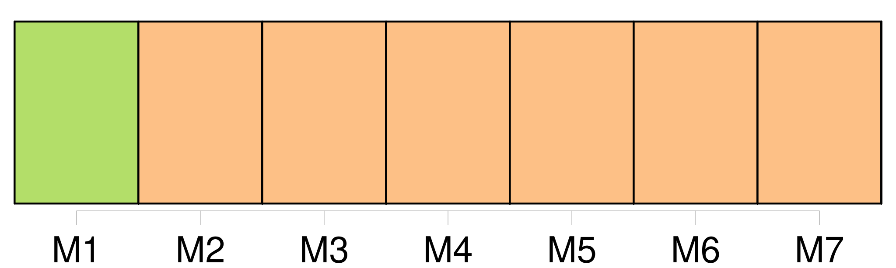
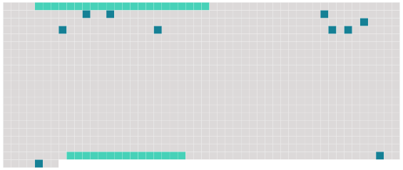

Longueur nb maillons : 12 mentions |
 |
La nuit dernière, [trente ou quarante pauvres créatures de toutes les nations, Grecs, Turcs, Espagnols, Français, venant de faire naufrage] , sont arrivés ici. [2 phrases] On [les] a entassés [tous] dans une seule chambre aux murailles nues, avec une cruche d'eau, en attendant que le commandant trouvât le temps de s'occuper d' [eux] [2 phrases] — Anna dit : « Encore que nous ayons si froid, et que nous soyons dans une prison, comme nous sommes heureux, en comparaison d' [eux] !! Et puis, nous avons la paix, tandis qu' [eux] ne font que se quereller, que se battre, et [ils] crient tout le temps. Le capitano nous envoie jusqu'à des marrons et des fruits de sa propre fable ; [eux] , [ils] n'ont pas même de pain. [36 phrases] — [Les pauvres étrangers arrivés d'hier, devenus presque fous de froid et de faim] , se sont querellés, battus, et enfin assis par groupes, sur la terre, pour jouer aux cartes, ce qui [les] a rendus encore plus bruyants que [leurs] querelles. |
 |
Il est possible de télécharger la ressource sur la page Ortolang |
Si vous avez des questions ou vous voyez des erreurs, merci d'envoyer un mail à silvia.federzoni89@gmail.com |